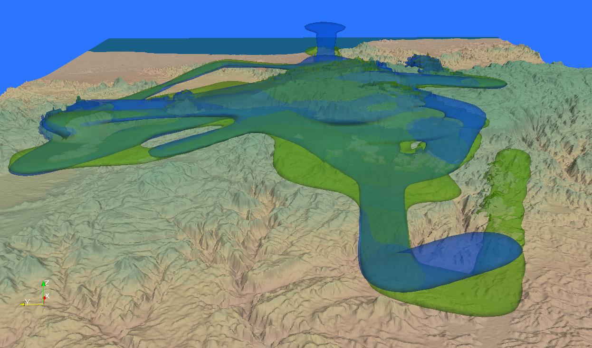
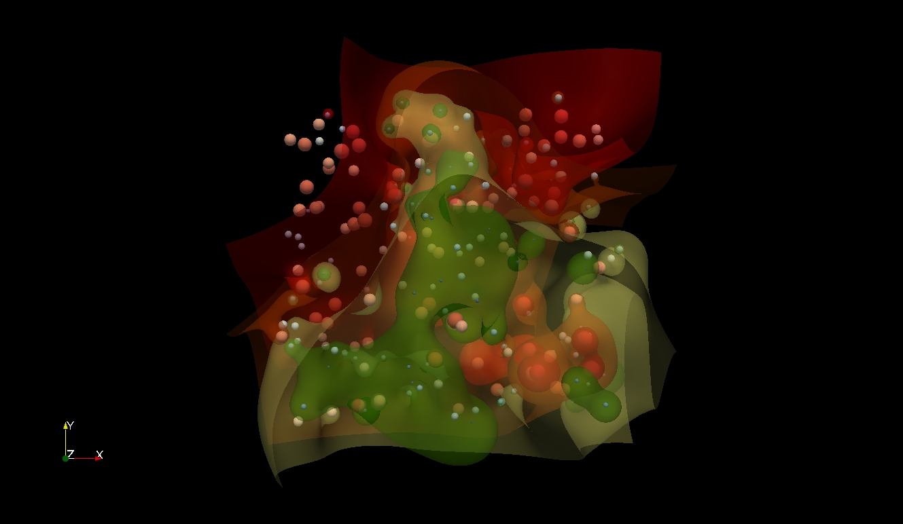
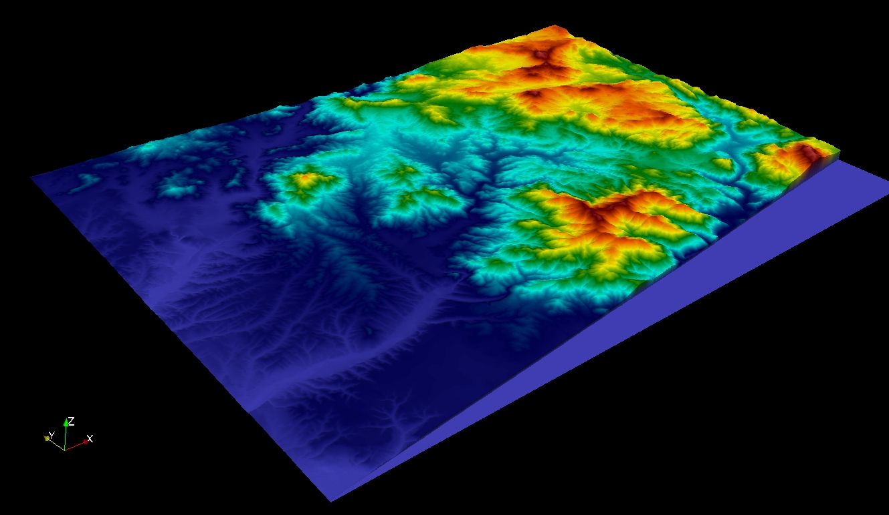
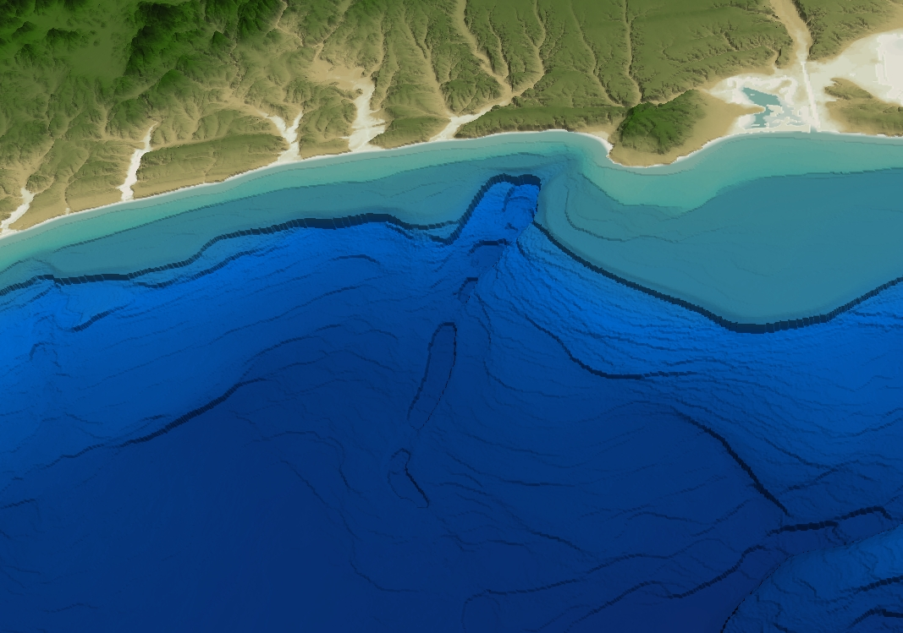
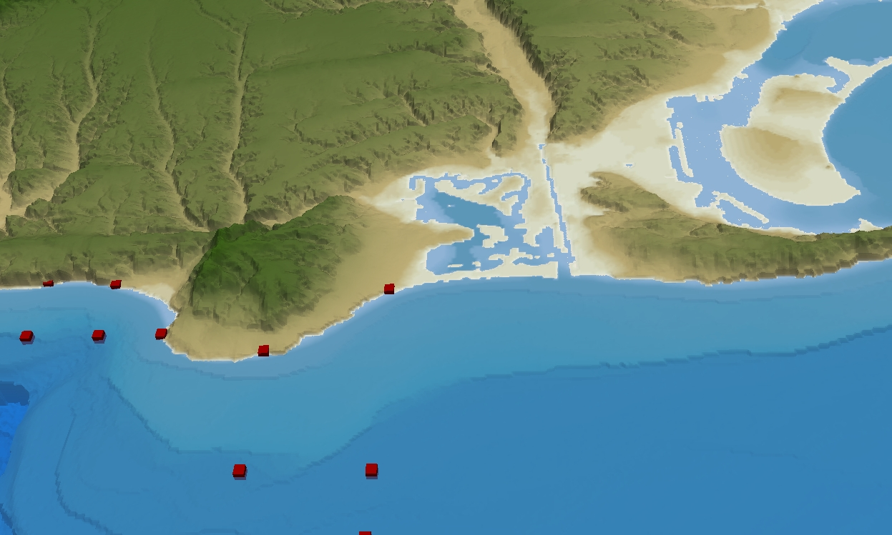

The Cognavitron — hover for details · click to navigate
Scientific Visualization
2015-01-01
Ecological data has shape — in space, in time, in three dimensions. Movement is not a line on a map; it is a volume carved out of the air or the landscape. Terrain is not a colored grid; it is structure that determines where water flows, where animals can go, where fire will spread. A drone survey is not a mosaic; it is a textured surface you can move through.
Three-dimensional visualization makes that structure visible. These are examples from across the research program, built with R, Python, ParaView, and WebODM.
Animal Movement in 3D Space
Movement kernel density estimation (MKDE) extended to three dimensions captures how animals actually use space — including altitude, thermals, and vertical habitat structure. Each probability surface represents where an individual spent its time, at what elevation, over what period.


Landscape Structure
Terrain rendered in three dimensions reveals drainage patterns, ridge lines, and topographic complexity that flat maps obscure. These visualizations combine digital elevation models with land cover data to show the landscape as animals and ecologists experience it.

Drone-Derived Surface Models
Structure-from-motion photogrammetry from UAV imagery produces textured 3D surface models at centimeter resolution — enough to resolve individual shrubs, trails, and terrain features. This is the landscape at the scale an animal actually navigates.

Coastal Bathymetry and Sea Level
Combining coastal terrain with seafloor bathymetry in a single 3D model reveals the underwater landscape adjacent to the shore — and what happens to it as sea levels rise. These visualizations were built from NOAA and USGS digital elevation data using Python and ParaView.

